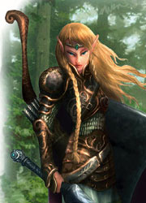

Forums galactiques > Taverne galactique : lieu de discussion informel > Election de Mister Espérance
Pages : 1 2 ... 4 5 6 ... 9 10
| Hatora la marchombre Réputation à la taverne : 159  17/12 ETU 18:10 | Score : 2 Détails Hatora s'aprocha de Leia entre deux candidats...
Elle lui chuchota. "Leia, ne laissez pas vos sentiments prendre le dessus..." Et repartit car un candidat venait de faire son entrée...Louis! Il fallait qu'elle reste neutre... même si pour elle s'était le plus beau de tous...^^ Le jurie avait l'air de notez leur apréciation... Quelqu'un dans la foule cria: -Décrivez-vous un peu plus les candidats on pourra pas voter si non!!! | ||
| Leia la sanguinaire Réputation à la taverne : 46  17/12 ETU 18:13 | Score : 1 Détails Leia répondit d' un air torturé:
-J' essaie, j'essaie (elle contemplait toujours Razor qui était en train d' attendre au bout de l' estrade à coté de Syl.) | ||
| Général_Louis Réputation à la taverne : 1323  17/12 ETU 18:14 | Score : 0 Détails "Hé bien, j'étais adopté à 9 ans par le Baron Vladimir Harkonnen ayant quitté la galaxie. J'étais un peu maltraîté par lui. A 17 ans je me suis enfui avec ma femme de ce temps mais elel est morte à 18 ans quand j'allais entrer chez les militaires. A 19 ans j'ai rencontré des monstres pendant mon service. A 24 ans je suis devenu Général, et oui je suis jeune pour l'être mais savez-vous qu'à 12 ans j'exerçai déjà en tant que chirurgien? Et ensuite, pourquoi suis-je commandant? Parce que j'ai très bien étudié. Maintenant je ne suis plus célibataire, je vis avec Hatora la marchombre."
Jetant un regard à Hatora qui essayait de rester neutre. | ||
| razorkilll Réputation à la taverne : -31  17/12 ETU 18:19 | Score : 0 Détails razor qui attendait a coter de Syl croisa le regard de Leia.il vut un sourire sur ses levre.il se demandait ce qui la fesait sourire.etait ce ca chute?? ou les parole d'une femme qui demandait plus de precision sur Louis?? ou bien une tous otre chose qu'il n'arivait pas a trouver.
| ||
| Hatora la marchombre Réputation à la taverne : 159 17/12 ETU 18:24 | Score : 1 Détails Hatora adressa un petit clin d'oeil à Louis.
Elle se sentit rougir quand ils prononça son nom... "Très bien... candidat suivant!!" | ||
| syl10 Réputation à la taverne : 102  17/12 ETU 18:26 | Score : 1 Détails y aura t'il un autre défilé parce que j'aimerai bien défilé en string léopard.
| ||
| Nymphe Desrivières Réputation à la taverne : 177  17/12 ETU 18:27 | Score : 0 Détails Le string rose en dentelle semi-transparente t'allait très bien pourtant...
| ||
| razorkilll Réputation à la taverne : -31 17/12 ETU 18:28 | Score : 1 Détails heu moi aussi j'aimerais defiler en string.pas en string penthere ni leopar car y en a pas sur mes planettes mai j'ais trouver un chat ca devrai le fair ^^.
| ||
| KURT Réputation à la taverne : 377  17/12 ETU 20:49 | Score : 0 Détails KURT fit son entrée en scene:
Vêtu d'un string et d'une longue cape noire KURT marchait d'un pas décidé devant le publique et le jury. Ses tatouages noirs sur sa peau rouge resortaient sur son torse musclé. Il fit une démonstration de sa puissance et un petit clin d'oeuil a la foule. Et il retourna sur ses pas, content de sa prestation. | ||
| Angus Young Réputation à la taverne : 419  17/12 ETU 22:06 | Score : 3 Détails Brrrr! Fait froid ici!
Angus arriva au niveau du podium. Il était vétu d'un manteau d'hiver, une cagoule, un bonnet et des gants; si bien que on ne voyait que le bout de son nez. Rhâââ! Il fallait que au moment ou je passe, le chauffage tombe en panne... Quelle idée de faire l'éléction "Mister éspérance" en plein hiver, je vous jure! Pour la peine ... ...Il dégaina sa Gibson SG... Je vais vous chanter une chanson :D ...À ma façon Et il se mit à interpréter un "Petit Papa Noël", version Hard-Rock (je vous laisse imaginer :)) Petit papa noooooooëëëëëëëëël. Quand tu dèèèèscendrâââs du cièèèèl... | ||
| Horohoro Réputation à la taverne : 1130  18/12 ETU 12:31 | Score : 0 Détails Luciole s'avança,jouant à faire tourner le manche de son sabre autours de son pouce...
(dangereux,un faux mouvement et vous paumez tous les autres doigts) Il portait un long t-shirt gris-vert,et par-dessus une veste courte qui d'arrêtait après les côtes. Il portait un pantalon trois-quart noir,orné de dessins de flammes. Il rengaina son katana dans un cliquetis métallique,puis avanca doucement la mains gauche. Une flamme apparut au creux de sa paume,éclaairant son visage... "Hé bien,je suis Keïkoku Amano,alias Luciole. Je fais un mètre septante-quatre,et je pèse 67 kilos. J'aurai 24 ans le 25 décembre. J'ai grandi sur la planète qui porte le nom de Silph,une planète au climat sibérien. La neige qui y tombe adoucit la peau,et le froid améliore la vue. Je suis mi-ninja mi-samouraï,et je ne crains personne en combat. Je maîtrise l'eau et les flammes,aussi étrange que cela puisse paraître. J'ai une technique de combat particulière,qui me permet de manier trois sabres à la fois. Je me bats pour la paix et la liberté,malgré les avis contraires de certains. Voilà." La flamme qu'il tenait disparut doucement,et il sortit de scène. | ||
| shief-joseph Réputation à la taverne : 9  18/12 ETU 18:32 | Score : 0 Détails Shief monta sur la seine et défila en costar cravate noir et blanc avec une cravate doré . Ses beaux cheveux long et blond ressortaient bien. Avec ses chaussures il faisait 2m, il reparti avec les applaudissement du publique .
| ||
| maître anubis Réputation à la taverne : 32  18/12 ETU 18:50 | Score : 1 Détails Anubis entre dans la salle,
Il était habillé d’une tunique rouge, la même que d’habitude. « je préfère être naturel, les défilés c’est pas trop mon truc désoler » il repartit pratiquement aussi vite qu’il était rentrer, un peu rouge. | ||
| Leia la sanguinaire Réputation à la taverne : 46 18/12 ETU 19:11 | Score : 0 Détails Leia dit à Hatora:
-Eh bien dis donc, tous les mecs qui participent! Mais, tu crois pas qu' en tant qu' organisatrice tu devrais leur dire que il y aura plusieurs défilés et qu'à chaque défilé ils porteront tous les mêmes vêtements? Parce que là...Syl en string, Shief en costar cravate, ça va être dur de les départager... | ||
| Hatora la marchombre Réputation à la taverne : 159 18/12 ETU 20:21 | Score : 1 Détails HRP: Reine EM je t'interdis de poster sur se tropic!! Pas besoin de répondre, je ne t'écouterai pas...:HRP
Hatora eu un rire silencieux. "Mais non, justement! C'est pour mieux connaître leur personnalité... Et en plus, c'est ennuyeux trop de défilés... désolée mais je dois continuer à présenter." Elle s'en alla est dit à travers son micro. "Et bien... il me semble que le jurie aura du mal à se décider! Les candidats sont plus beaux les uns que les autres!" Elle marqua un temps d'arrête en entendant la foule crier pour connaître le prochain participant. Candidat suivant, s'il vous plaît!" | ||
| KURT Réputation à la taverne : 377 18/12 ETU 20:42 | Score : 0 Détails Toi pas competences pour français parler ?
Oust! ====>[] j'ai pas envie de défiler devant cette chose... | ||
| razorkilll Réputation à la taverne : -31 18/12 ETU 20:44 | Score : 0 Détails moi je dit la gagnante ces rein eem
enfin la gagniante du concour miss poubelle:D | ||
| Hatora la marchombre Réputation à la taverne : 159 18/12 ETU 20:45 | Score : 1 Détails HRP: Mais c'est qu'elle est bouchée en plus celle là!!!
Je te signal que la première à avoir insulté l'autre c'est bien toi!!!:HRP | ||
| Rosa L. Réputation à la taverne : 1595  18/12 ETU 21:42  | Score : 0 Détails HRP///
Franchement, j'admire ta persévérance dans la bêtise et là, je te jure que je reste polie. Alors, c'est très simple, tu as jusqu'à demain soir pour partir. Dans le cas contraire, je viendrai personnellement m'occuper de ton cas. Suis-je claire? Je n'attends aucune réponse de ta part. ///HRP | ||
| DarkDevil Réputation à la taverne : 569  18/12 ETU 21:45 | Score : 0 Détails HRP:Arrêtez de vous cassez la tête!!! Appelez un modo et il feront le travaille. c'est du HRP TOTAL avec cette joueuse...
Si l'un d'entre vous fait parti du forum externe, qu'il signale le cas "Rein Em"....:HRP |
Pages : 1 2 ... 4 5 6 ... 9 10
Forums galactiques > Taverne galactique : lieu de discussion informel > Election de Mister Espérance